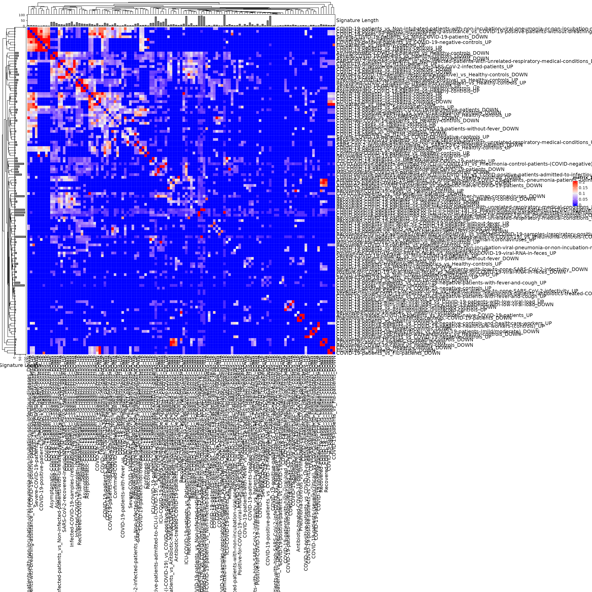
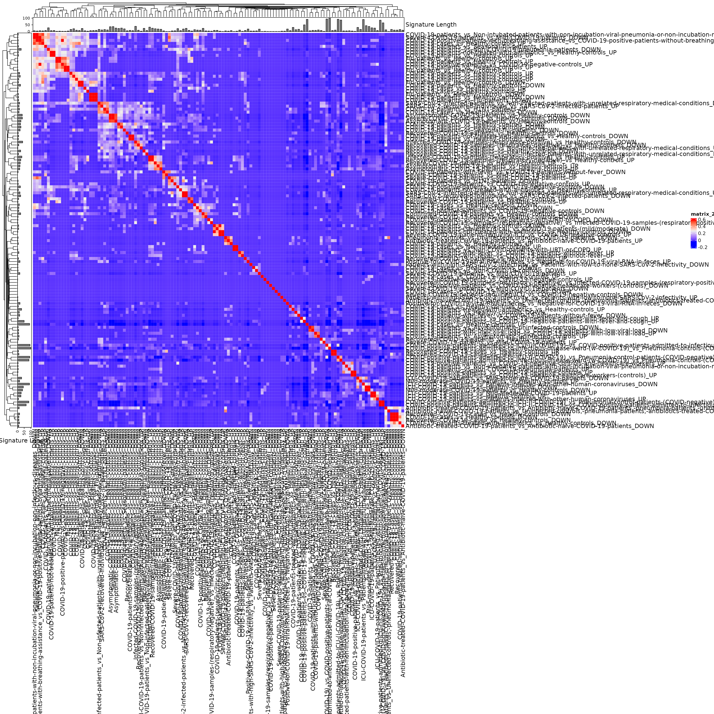

capstoneanalysis_clare.rmdInstall packages (not evaluated in vignette)
install.packages(c("devtools", "tidyverse", "kableExtra", "gt", "glue"))
devtools::install_github("waldronlab/bugSigSimple")
devtools::install_github("waldronlab/BugSigDBStats")
devtools::install_github("waldronlab/bugsigdbr")
library(bugSigSimple)
dat <- bugsigdbr::importBugSigDB(cache = TRUE) ## Using cached version from 2022-03-11 12:21:25
dim(dat)## [1] 2098 48
names(dat)## [1] "Study" "Study design"
## [3] "PMID" "DOI"
## [5] "URL" "Authors"
## [7] "Title" "Journal"
## [9] "Year" "Experiment"
## [11] "Location of subjects" "Host species"
## [13] "Body site" "UBERON ID"
## [15] "Condition" "EFO ID"
## [17] "Group 0 name" "Group 1 name"
## [19] "Group 1 definition" "Group 0 sample size"
## [21] "Group 1 sample size" "Antibiotics exclusion"
## [23] "Sequencing type" "16S variable region"
## [25] "Sequencing platform" "Statistical test"
## [27] "Significance threshold" "MHT correction"
## [29] "LDA Score above" "Matched on"
## [31] "Confounders controlled for" "Pielou"
## [33] "Shannon" "Chao1"
## [35] "Simpson" "Inverse Simpson"
## [37] "Richness" "Signature page name"
## [39] "Source" "Curated date"
## [41] "Curator" "Revision editor"
## [43] "Description" "Abundance in Group 1"
## [45] "MetaPhlAn taxon names" "NCBI Taxonomy IDs"
## [47] "State" "Reviewer"## ── Attaching packages ─────────────────────────────────────── tidyverse 1.3.1 ──## ✔ ggplot2 3.3.5 ✔ purrr 0.3.4
## ✔ tibble 3.1.6 ✔ dplyr 1.0.8
## ✔ tidyr 1.2.0 ✔ stringr 1.4.0
## ✔ readr 2.1.2 ✔ forcats 0.5.1## ── Conflicts ────────────────────────────────────────── tidyverse_conflicts() ──
## ✖ dplyr::filter() masks stats::filter()
## ✖ dplyr::lag() masks stats::lag()
condsnew <- c("COVID-19")
covid_all <- subsetByCondition(dat, condsnew) %>%
mutate(studyexp = paste(Study, Experiment, sep = "_")) %>%
mutate(
site = recode(`Body site`,
"feces" = "Gut",
"rectal" = "Gut",
"nasopharynx" = "aURT",
"oropharynx" = "aURT",
"nasopharynx,oropharynx" = "aURT",
"tongue" = "aURT"
)
) %>%
mutate(comparison1 = paste(`Group 0 name`, `Group 1 name`, sep = " vs "))
bugSigSimple::createStudyTable(covid_all)## # A tibble: 31 × 5
## Study Condition Cases Controls `Study Design`
## <chr> <chr> <dbl> <dbl> <chr>
## 1 Cao 2021 COVID-19 13 8 case-control
## 2 Engen 2021 COVID-19 9 10 cross-sectional observational, not cas…
## 3 Gaibani 2021 COVID-19 24 24 case-control
## 4 Gao 2021 COVID-19 94 48 prospective cohort
## 5 Gu 2020 COVID-19 30 30 cross-sectional observational, not cas…
## 6 Gupta 2021 COVID-19 63 26 cross-sectional observational, not cas…
## 7 Hoque 2021 COVID-19 11 10 case-control
## 8 Khan 2021 COVID-19 10 10 cross-sectional observational, not cas…
## 9 Kim 2021 COVID-19 12 36 time series / longitudinal observation…
## 10 Liu 2021 COVID-19 6 3 cross-sectional observational, not cas…
## # … with 21 more rows
library(dplyr)
gut_sigs <- filter(covid_all,
site == "Gut") %>%
drop_na(Source)
naso_sigs <- filter(covid_all,
site == "aURT") %>%
drop_na(Source)In this table, the Binomial Test p-value corresponds to the null hypothesis
H0: the proportion of signatures in which the taxon is reported increased or decreased, relative to the total number of signatures in which it is reported, is equal to 0.5
kableExtra::kbl(bugSigSimple::createTaxonTable(gut_sigs))| Taxon Name | Taxonomic Level | total_signatures | increased_signatures | decreased_signatures | Binomial Test pval | kingdom | phylum | class | order | family | genus | species | n_signatures | metaphlan_name |
|---|---|---|---|---|---|---|---|---|---|---|---|---|---|---|
| Anaerostipes | genus | 12 | 4 | 8 | 0.3900 | Bacteria | Firmicutes | Clostridia | Eubacteriales | Lachnospiraceae | Anaerostipes | NA | 14 | k__Bacteria|p__Firmicutes|c__Clostridia|o__Eubacteriales|f__Lachnospiraceae|g__Anaerostipes |
| Streptococcus | genus | 11 | 10 | 1 | 0.0120 | Bacteria | Firmicutes | Bacilli | Lactobacillales | Streptococcaceae | Streptococcus | NA | 15 | k__Bacteria|p__Firmicutes|c__Bacilli|o__Lactobacillales|f__Streptococcaceae|g__Streptococcus |
| Faecalibacterium | genus | 11 | 1 | 10 | 0.0120 | Bacteria | Firmicutes | Clostridia | Eubacteriales | Oscillospiraceae | Faecalibacterium | NA | 17 | k__Bacteria|p__Firmicutes|c__Clostridia|o__Eubacteriales|f__Oscillospiraceae|g__Faecalibacterium |
| Enterococcus | genus | 10 | 10 | 0 | 0.0020 | Bacteria | Firmicutes | Bacilli | Lactobacillales | Enterococcaceae | Enterococcus | NA | 15 | k__Bacteria|p__Firmicutes|c__Bacilli|o__Lactobacillales|f__Enterococcaceae|g__Enterococcus |
| Clostridium | genus | 10 | 4 | 6 | 0.7500 | Bacteria | Firmicutes | Clostridia | Eubacteriales | Clostridiaceae | Clostridium | NA | 13 | k__Bacteria|p__Firmicutes|c__Clostridia|o__Eubacteriales|f__Clostridiaceae|g__Clostridium |
| Roseburia | genus | 10 | 0 | 10 | 0.0020 | Bacteria | Firmicutes | Clostridia | Eubacteriales | Lachnospiraceae | Roseburia | NA | 13 | k__Bacteria|p__Firmicutes|c__Clostridia|o__Eubacteriales|f__Lachnospiraceae|g__Roseburia |
| Blautia | genus | 9 | 3 | 6 | 0.5100 | Bacteria | Firmicutes | Clostridia | Eubacteriales | Lachnospiraceae | Blautia | NA | 11 | k__Bacteria|p__Firmicutes|c__Clostridia|o__Eubacteriales|f__Lachnospiraceae|g__Blautia |
| Coprococcus | genus | 9 | 0 | 9 | 0.0039 | Bacteria | Firmicutes | Clostridia | Eubacteriales | Lachnospiraceae | Coprococcus | NA | 15 | k__Bacteria|p__Firmicutes|c__Clostridia|o__Eubacteriales|f__Lachnospiraceae|g__Coprococcus |
| Dorea | genus | 9 | 1 | 8 | 0.0390 | Bacteria | Firmicutes | Clostridia | Eubacteriales | Lachnospiraceae | Dorea | NA | 16 | k__Bacteria|p__Firmicutes|c__Clostridia|o__Eubacteriales|f__Lachnospiraceae|g__Dorea |
| Lactobacillaceae | family | 8 | 5 | 3 | 0.7300 | Bacteria | Firmicutes | Bacilli | Lactobacillales | Lactobacillaceae | NA | NA | 15 | k__Bacteria|p__Firmicutes|c__Bacilli|o__Lactobacillales|f__Lactobacillaceae |
kableExtra::kbl(bugSigSimple::createTaxonTable(naso_sigs))| Taxon Name | Taxonomic Level | total_signatures | increased_signatures | decreased_signatures | Binomial Test pval | kingdom | phylum | class | order | family | genus | species | n_signatures | metaphlan_name |
|---|---|---|---|---|---|---|---|---|---|---|---|---|---|---|
| Veillonella | genus | 11 | 8 | 3 | 0.230 | Bacteria | Firmicutes | Negativicutes | Veillonellales | Veillonellaceae | Veillonella | NA | 12 | k__Bacteria|p__Firmicutes|c__Negativicutes|o__Veillonellales|f__Veillonellaceae|g__Veillonella |
| Rothia | genus | 8 | 2 | 6 | 0.290 | Bacteria | Actinobacteria | Actinomycetia | Micrococcales | Micrococcaceae | Rothia | NA | 10 | k__Bacteria|p__Actinobacteria|c__Actinomycetia|o__Micrococcales|f__Micrococcaceae|g__Rothia |
| Streptococcus | genus | 8 | 2 | 6 | 0.290 | Bacteria | Firmicutes | Bacilli | Lactobacillales | Streptococcaceae | Streptococcus | NA | 12 | k__Bacteria|p__Firmicutes|c__Bacilli|o__Lactobacillales|f__Streptococcaceae|g__Streptococcus |
| Prevotella | genus | 7 | 3 | 4 | 1.000 | Bacteria | Bacteroidetes | Bacteroidia | Bacteroidales | Prevotellaceae | Prevotella | NA | 18 | k__Bacteria|p__Bacteroidetes|c__Bacteroidia|o__Bacteroidales|f__Prevotellaceae|g__Prevotella |
| Oribacterium | genus | 7 | 1 | 6 | 0.130 | Bacteria | Firmicutes | Clostridia | Eubacteriales | Lachnospiraceae | Oribacterium | NA | 7 | k__Bacteria|p__Firmicutes|c__Clostridia|o__Eubacteriales|f__Lachnospiraceae|g__Oribacterium |
| Filifactor | genus | 7 | 1 | 6 | 0.130 | Bacteria | Firmicutes | Clostridia | Eubacteriales | Peptostreptococcaceae | Filifactor | NA | 7 | k__Bacteria|p__Firmicutes|c__Clostridia|o__Eubacteriales|f__Peptostreptococcaceae|g__Filifactor |
| Acinetobacter | genus | 7 | 3 | 4 | 1.000 | Bacteria | Proteobacteria | Gammaproteobacteria | Pseudomonadales | Moraxellaceae | Acinetobacter | NA | 7 | k__Bacteria|p__Proteobacteria|c__Gammaproteobacteria|o__Pseudomonadales|f__Moraxellaceae|g__Acinetobacter |
| Haemophilus | genus | 6 | 0 | 6 | 0.031 | Bacteria | Proteobacteria | Gammaproteobacteria | Pasteurellales | Pasteurellaceae | Haemophilus | NA | 7 | k__Bacteria|p__Proteobacteria|c__Gammaproteobacteria|o__Pasteurellales|f__Pasteurellaceae|g__Haemophilus |
| Arachnia | genus | 5 | 0 | 5 | 0.062 | Bacteria | Actinobacteria | Actinomycetia | Propionibacteriales | Propionibacteriaceae | Arachnia | NA | 5 | k__Bacteria|p__Actinobacteria|c__Actinomycetia|o__Propionibacteriales|f__Propionibacteriaceae|g__Arachnia |
| Bacteroidetes | phylum | 5 | 0 | 5 | 0.062 | Bacteria | Bacteroidetes | NA | NA | NA | NA | NA | 27 | k__Bacteria|p__Bacteroidetes |
Look specifically at case-control comparisons
healthy <- grepl(".*(healthy.*COVID|COVID.*healthy).*", gut_sigs$comparison1, ignore.case = TRUE)
cc_gut_sigs1 <- gut_sigs %>%
filter(healthy == TRUE) Identifying a taxon reported consistently in 8 out of 8 studies is much more compelling that the FDR value here would suggest, since this taxon also passed a significance threshold in every one of those studies.
cc_gut_sigs1_taxontable <- bugSigSimple::createTaxonTable(cc_gut_sigs1) %>%
mutate(FDR = p.adjust(p = `Binomial Test pval`, method="fdr")) %>%
relocate(FDR, .after = `Binomial Test pval`)
kableExtra::kbl(cc_gut_sigs1_taxontable)| Taxon Name | Taxonomic Level | total_signatures | increased_signatures | decreased_signatures | Binomial Test pval | FDR | kingdom | phylum | class | order | family | genus | species | n_signatures | metaphlan_name |
|---|---|---|---|---|---|---|---|---|---|---|---|---|---|---|---|
| Enterococcus | genus | 8 | 8 | 0 | 0.0078 | 0.0156000 | Bacteria | Firmicutes | Bacilli | Lactobacillales | Enterococcaceae | Enterococcus | NA | 11 | k__Bacteria|p__Firmicutes|c__Bacilli|o__Lactobacillales|f__Enterococcaceae|g__Enterococcus |
| Lactobacillaceae | family | 8 | 5 | 3 | 0.7300 | 0.7300000 | Bacteria | Firmicutes | Bacilli | Lactobacillales | Lactobacillaceae | NA | NA | 12 | k__Bacteria|p__Firmicutes|c__Bacilli|o__Lactobacillales|f__Lactobacillaceae |
| Streptococcus | genus | 8 | 8 | 0 | 0.0078 | 0.0156000 | Bacteria | Firmicutes | Bacilli | Lactobacillales | Streptococcaceae | Streptococcus | NA | 10 | k__Bacteria|p__Firmicutes|c__Bacilli|o__Lactobacillales|f__Streptococcaceae|g__Streptococcus |
| Anaerostipes | genus | 8 | 1 | 7 | 0.0700 | 0.1000000 | Bacteria | Firmicutes | Clostridia | Eubacteriales | Lachnospiraceae | Anaerostipes | NA | 9 | k__Bacteria|p__Firmicutes|c__Clostridia|o__Eubacteriales|f__Lachnospiraceae|g__Anaerostipes |
| Coprococcus | genus | 8 | 0 | 8 | 0.0078 | 0.0156000 | Bacteria | Firmicutes | Clostridia | Eubacteriales | Lachnospiraceae | Coprococcus | NA | 13 | k__Bacteria|p__Firmicutes|c__Clostridia|o__Eubacteriales|f__Lachnospiraceae|g__Coprococcus |
| Roseburia | genus | 8 | 0 | 8 | 0.0078 | 0.0156000 | Bacteria | Firmicutes | Clostridia | Eubacteriales | Lachnospiraceae | Roseburia | NA | 10 | k__Bacteria|p__Firmicutes|c__Clostridia|o__Eubacteriales|f__Lachnospiraceae|g__Roseburia |
| Faecalibacterium | genus | 8 | 0 | 8 | 0.0078 | 0.0156000 | Bacteria | Firmicutes | Clostridia | Eubacteriales | Oscillospiraceae | Faecalibacterium | NA | 13 | k__Bacteria|p__Firmicutes|c__Clostridia|o__Eubacteriales|f__Oscillospiraceae|g__Faecalibacterium |
| Clostridium | genus | 7 | 2 | 5 | 0.4500 | 0.5625000 | Bacteria | Firmicutes | Clostridia | Eubacteriales | Clostridiaceae | Clostridium | NA | 8 | k__Bacteria|p__Firmicutes|c__Clostridia|o__Eubacteriales|f__Clostridiaceae|g__Clostridium |
| Anaerobutyricum hallii | species | 6 | 2 | 4 | 0.6900 | 0.7300000 | Bacteria | Firmicutes | Clostridia | Eubacteriales | Lachnospiraceae | Anaerobutyricum | Anaerobutyricum hallii | 6 | k__Bacteria|p__Firmicutes|c__Clostridia|o__Eubacteriales|f__Lachnospiraceae|g__Anaerobutyricum|s__Anaerobutyricum hallii |
| Dorea | genus | 6 | 0 | 6 | 0.0310 | 0.0516667 | Bacteria | Firmicutes | Clostridia | Eubacteriales | Lachnospiraceae | Dorea | NA | 11 | k__Bacteria|p__Firmicutes|c__Clostridia|o__Eubacteriales|f__Lachnospiraceae|g__Dorea |
Just for the increased cc_gut_sigs1 for now. I am inclined to skip this analysis in favor of the clustering and binomial test analysis.
library(bugSigSimple)
gut.sigs.increased <- filter(cc_gut_sigs1, `Abundance in Group 1` == "increased") %>%
bugsigdbr::getSignatures(tax.id.type = "taxname")
my.siglengths.inc <- sapply(gut.sigs.increased, length)
getCriticalN(gut.sigs.increased, my.siglengths.inc)## 95%
## 10
# Compare to observed - enterococcus & streptococcus are the only taxa that equal the critical limit
frequencySigs(gut.sigs.increased)## Enterococcus Streptococcus Enterobacteriaceae
## 8 8 5
## Enterocloster citroniae Enterococcaceae Lactobacillaceae
## 5 5 5
## Rothia Actinobacteria Atopobium
## 5 4 4
## Lactobacillus
## 4
createTaxonTable(cc_gut_sigs1, n=40)Note, this EDA should really be done before hypothesis testing.
First calculate pairwise overlaps for all signatures of length > 1:
allsigs <- bugsigdbr::getSignatures(covid_all, tax.id.type = "taxname")
allsigs <- allsigs[sapply(allsigs, length) > 1] #require length > 1
dim(allsigs)## NULL
mydists <- BugSigDBStats::calcPairwiseOverlaps(allsigs)
dim(mydists)## [1] 1811 8Create a matrix of Jaccard similarities (0 for no overlap, 1 for 100% overlap)
jmat <- BugSigDBStats::calcJaccardSimilarity(allsigs)## Loading required package: grid## ========================================
## ComplexHeatmap version 2.10.0
## Bioconductor page: http://bioconductor.org/packages/ComplexHeatmap/
## Github page: https://github.com/jokergoo/ComplexHeatmap
## Documentation: http://jokergoo.github.io/ComplexHeatmap-reference
##
## If you use it in published research, please cite:
## Gu, Z. Complex heatmaps reveal patterns and correlations in multidimensional
## genomic data. Bioinformatics 2016.
##
## The new InteractiveComplexHeatmap package can directly export static
## complex heatmaps into an interactive Shiny app with zero effort. Have a try!
##
## This message can be suppressed by:
## suppressPackageStartupMessages(library(ComplexHeatmap))
## ========================================
siglengths <- sapply(allsigs, length)
ha <- HeatmapAnnotation(`Signature Length` = anno_barplot(siglengths))
hr <- rowAnnotation(`Signature Length` = anno_barplot(siglengths))
hm <- Heatmap(
jmat,
top_annotation = ha, left_annotation = hr,
row_names_max_width = unit(20, "cm"),
column_names_max_height = unit(20, "cm"),
row_labels = sub(".+:", "", rownames(jmat)),
column_labels = sub(".+:", "", colnames(jmat))
)## The automatically generated colors map from the 1^st and 99^th of the
## values in the matrix. There are outliers in the matrix whose patterns
## might be hidden by this color mapping. You can manually set the color
## to `col` argument.
##
## Use `suppressMessages()` to turn off this message.
hm
Use this interactively to make an interactive heatmap (not evaluated in vignette). Some expanding of the default size is required to see anything. Creating a sub-heatmap, then exporting it as a table, allows in-depth identification of the subgroups.
library(InteractiveComplexHeatmap)
hm <- draw(hm)
htShiny(hm)This tree can be cut to show the clusters, for example. The clusters of more than 1 signature but less than ~10 signatures are most likely to be something interesting.
## [[1]]
## [1] "bsdb:428/1/1_COVID-19:COVID-19-cases_vs_Healthy-controls_UP"
## [2] "bsdb:428/1/2_COVID-19:COVID-19-cases_vs_Healthy-controls_DOWN"
## [3] "bsdb:428/3/1_COVID-19:Recovered-COVID-19-cases_vs_Healthy-controls_UP"
## [4] "bsdb:430/1/1_COVID-19:Patients-with-high-SARS-CoV-2-infectivity_vs_Patients-with-low-to-none-SARS-CoV-2-infectivity_UP"
## [5] "bsdb:441/1/1_COVID-19:COVID-19-cases_vs_Healthy-controls_UP"
## [6] "bsdb:441/3/2_COVID-19:COVID-19-patients_vs_H1N1-patients_DOWN"
## [7] "bsdb:449/1/2_COVID-19:COVID-19-cases_vs_Healthy-controls_DOWN"
## [8] "bsdb:453/3/1_COVID-19:Recovered-COVID-19-patients_vs_Non-infected-patients-with-unrelated-respiratory-medical-conditions_UP"
## [9] "bsdb:453/3/2_COVID-19:Recovered-COVID-19-patients_vs_Non-infected-patients-with-unrelated-respiratory-medical-conditions_DOWN"
## [10] "bsdb:458/1/1_COVID-19:COVID-19-patients_vs_Non-intubated-patients-with-non-incubation-viral-pneumonia-or-non-incubation-non-infectious-diseases_UP"
## [11] "bsdb:459/1/2_COVID-19:COVID-19-positive-patients_vs_COVID-19-negative-controls_UP"
## [12] "bsdb:464/1/2_COVID-19:Confirmed-COVID-19-patients_vs_Healthy-controls_UP"
## [13] "bsdb:474/1/2_COVID-19:COVID-19-patients_vs_Non-COVID-patients-with-URTI-or-COPD_DOWN"
## [14] "bsdb:479/2/2_COVID-19:Mild-moderate-COVID-19-patients_vs_Healthy-controls_UP"
## [15] "bsdb:482/1/2_COVID-19:Severe-COVID-19-patients_vs_Mild-COVID-19-patients_UP"
## [16] "bsdb:483/1/1_COVID-19:Antibiotic-naive-COVID-19-patients_vs_Uninfected-controls,-pneumonia-patients,-antibiotics-treated-COVID-19-patients_UP"
## [17] "bsdb:483/3/1_COVID-19:Pneumonia-controls_vs_Uninfected-controls,-COVID-19-patients_DOWN"
## [18] "bsdb:484/1/1_COVID-19:COVID-19-positive-patients_vs_COVID-19-negative-patients-with-fever-and-cough_UP"
## [19] "bsdb:485/1/1_COVID-19:COVID-19-patients-with-fever_vs_COVID-19-patients-without-fever_UP"
## [20] "bsdb:511/1/2_COVID-19:COVID-19-patients_vs_Healthy-controls_DOWN"
## [21] "bsdb:512/3/1_COVID-19:COVID-19-positive-patients_vs_COVID-19-negative-healthcare-workers-(controls)_UP"
##
## [[2]]
## [1] "bsdb:428/2/1_COVID-19:Recovered-COVID-19-cases_vs_Healthy-controls_UP"
## [2] "bsdb:428/2/2_COVID-19:Recovered-COVID-19-cases_vs_Healthy-controls_DOWN"
## [3] "bsdb:441/1/2_COVID-19:COVID-19-cases_vs_Healthy-controls_DOWN"
## [4] "bsdb:441/4/1_COVID-19:COVID-19-cases_vs_Healthy-controls_UP"
## [5] "bsdb:453/1/1_COVID-19:SARS-CoV-2-infected-patients_vs_Non-infected-patients-with-unrelated-respiratory-medical-conditions_UP"
## [6] "bsdb:464/2/2_COVID-19:Recovered-COVID-19-patients_vs_Healthy-controls_UP"
## [7] "bsdb:469/1/1_COVID-19:COVID-19-patients_vs_Non-COVID-19-controls_DOWN"
## [8] "bsdb:474/1/1_COVID-19:COVID-19-patients_vs_Non-COVID-patients-with-URTI-or-COPD_UP"
## [9] "bsdb:476/1/1_COVID-19:Recovered-COVID-19-patients_vs_Healthy-controls_UP"
## [10] "bsdb:478/1/2_COVID-19:COVID-19-patients_vs_Healthy-controls_UP"
## [11] "bsdb:479/2/1_COVID-19:Mild-moderate-COVID-19-patients_vs_Healthy-controls_DOWN"
## [12] "bsdb:481/1/1_COVID-19:COVID-19-patients_vs_Healthy-controls_UP"
## [13] "bsdb:487/1/1_COVID-19:Recovered-COVID-19-samples-(respiratory-negative)_vs_Infected-COVID-19-samples-(respiratory-positive)_UP"
## [14] "bsdb:498/1/2_COVID-19:COVID-19-patients_vs_Asymptomatic-uninfected-controls_DOWN"
## [15] "bsdb:511/3/2_COVID-19:COVID-19-patients-not-treated-with-antibiotics_vs_Healthy-controls_DOWN"
## [16] "bsdb:511/4/2_COVID-19:COVID-19-patients_vs_Healthy-controls_DOWN"
## [17] "bsdb:512/2/1_COVID-19:COVID-19-positive-patients_vs_COVID-19-negative-controls_UP"
##
## [[3]]
## [1] "bsdb:428/3/2_COVID-19:Recovered-COVID-19-cases_vs_Healthy-controls_DOWN"
## [2] "bsdb:453/2/1_COVID-19:SARS-CoV-2-recovered-individuals_vs_SARS-CoV-2-infected-patients_DOWN"
## [3] "bsdb:458/1/2_COVID-19:COVID-19-patients_vs_Non-intubated-patients-with-non-incubation-viral-pneumonia-or-non-incubation-non-infectious-diseases_DOWN"
## [4] "bsdb:478/2/1_COVID-19:COVID-19-patients_vs_Flu-patients_DOWN"
## [5] "bsdb:479/1/1_COVID-19:ICU-COVID-19-patients_vs_Healthy-controls_DOWN"
## [6] "bsdb:479/4/2_COVID-19:ICU-COVID-19-patients_vs_Patients-infected-with-other-human-coronaviruses_UP"
## [7] "bsdb:481/2/1_COVID-19:Antibiotic-treated-COVID-19-patients_vs_Antibiotic-naive-COVID-19-patients_UP"
## [8] "bsdb:481/3/1_COVID-19:Severe-COVID-19-patients_vs_Mild-COVID-19-patients_UP"
## [9] "bsdb:485/2/2_COVID-19:COVID-19-patients-with-fever_vs_COVID-19-patients-without-fever_DOWN"
## [10] "bsdb:487/2/1_COVID-19:Recovered-COVID-19-samples-(respiratory-negative)_vs_Healthy-controls_DOWN"
##
## [[4]]
## [1] "bsdb:428/4/1_COVID-19:COVID-19-patients-treated-with-antibiotics_vs_Healthy-controls_DOWN"
## [2] "bsdb:428/4/2_COVID-19:COVID-19-patients-treated-with-antibiotics_vs_Healthy-controls_UP"
## [3] "bsdb:430/1/2_COVID-19:Patients-with-high-SARS-CoV-2-infectivity_vs_Patients-with-low-to-none-SARS-CoV-2-infectivity_DOWN"
## [4] "bsdb:453/1/2_COVID-19:SARS-CoV-2-infected-patients_vs_Non-infected-patients-with-unrelated-respiratory-medical-conditions_DOWN"
## [5] "bsdb:453/4/2_COVID-19:Positive-for-COVID-19-viral-RNA-in-feces_vs_Negative-for-COVID-19-viral-RNA-in-feces_DOWN"
## [6] "bsdb:464/2/1_COVID-19:Recovered-COVID-19-patients_vs_Healthy-controls_DOWN"
## [7] "bsdb:477/1/1_COVID-19:Severe-COVID-19-patients_vs_COVID-19-negative-controls_UP"
## [8] "bsdb:479/3/1_COVID-19:ICU-COVID-19-patients_vs_Mild-Moderate-COVID-19-patients_DOWN"
## [9] "bsdb:484/4/1_COVID-19:COVID-19-positive-patients_vs_COVID-19-negative-patients-with-fever-and-cough_UP"
## [10] "bsdb:498/1/1_COVID-19:COVID-19-patients_vs_Asymptomatic-uninfected-controls_UP"
##
## [[5]]
## [1] "bsdb:441/3/1_COVID-19:COVID-19-patients_vs_H1N1-patients_UP"
## [2] "bsdb:473/1/1_COVID-19:COVID-19-positive-patients_vs_COVID-19-negative-controls_DOWN"
## [3] "bsdb:478/3/1_COVID-19:Flu-patients_vs_Healthy-controls_UP"
## [4] "bsdb:479/1/2_COVID-19:ICU-COVID-19-patients_vs_Healthy-controls_UP"
## [5] "bsdb:481/2/2_COVID-19:Antibiotic-treated-COVID-19-patients_vs_Antibiotic-naive-COVID-19-patients_DOWN"
## [6] "bsdb:500/1/1_COVID-19:COVID-19-patients_vs_Non-COVID-19-pneumonia-patients_UP"
## [7] "bsdb:511/2/1_COVID-19:COVID-19-patients-(severe/critical)_vs_COVID-19-patients-(mild/moderate)_DOWN"
##
## [[6]]
## [1] "bsdb:449/1/1_COVID-19:COVID-19-cases_vs_Healthy-controls_UP"
## [2] "bsdb:453/2/2_COVID-19:SARS-CoV-2-recovered-individuals_vs_SARS-CoV-2-infected-patients_UP"
## [3] "bsdb:459/1/1_COVID-19:COVID-19-positive-patients_vs_COVID-19-negative-controls_DOWN"
## [4] "bsdb:478/5/1_COVID-19:Flu-patients_vs_Healthy-controls_DOWN"
## [5] "bsdb:481/1/2_COVID-19:COVID-19-patients_vs_Healthy-controls_DOWN"
## [6] "bsdb:486/1/2_COVID-19:Asymptomatic-COVID-19-patients_vs_Healthy-controls_DOWN"
## [7] "bsdb:486/2/1_COVID-19:Asymptomatic-COVID-19-patients_vs_Healthy-controls_UP"
## [8] "bsdb:489/1/1_COVID-19:COVID-positive-patients-admitted-to-ICU-(i-COVID-19)_vs_Pneumonia-control-patients-(COVID-negative)_UP"
## [9] "bsdb:513/1/1_COVID-19:COVID-19-positive-patients_vs_COVID-19-negative-controls_UP"
##
## [[7]]
## [1] "bsdb:453/4/1_COVID-19:Positive-for-COVID-19-viral-RNA-in-feces_vs_Negative-for-COVID-19-viral-RNA-in-feces_UP"
## [2] "bsdb:464/3/2_COVID-19:COVID-19-patients_vs_Healthy-controls_UP"
## [3] "bsdb:476/1/2_COVID-19:Recovered-COVID-19-patients_vs_Healthy-controls_DOWN"
## [4] "bsdb:489/2/1_COVID-19:COVID-positive-patients-admitted-to-ICU-(i-COVID-19)_vs_COVID-positive-patients-admitted-to-infectious-disease-ward-(w-COVID-19)_UP"
## [5] "bsdb:498/2/1_COVID-19:COVID-19-patients-with-high-viral-load_vs_COVID-19-patients-with-low-viral-load_UP"
##
## [[8]]
## [1] "bsdb:464/1/1_COVID-19:Confirmed-COVID-19-patients_vs_Healthy-controls_DOWN"
## [2] "bsdb:478/4/2_COVID-19:COVID-19-patients_vs_Healthy-controls_UP"
## [3] "bsdb:479/3/2_COVID-19:ICU-COVID-19-patients_vs_Mild-Moderate-COVID-19-patients_UP"
## [4] "bsdb:483/2/1_COVID-19:Antibiotic-treated-COVID-19-patients_vs_Antibiotic-naive-COVID-19-patients,-pneumonia-patients,-uninfected-controls_DOWN"
## [5] "bsdb:485/1/2_COVID-19:COVID-19-patients-with-fever_vs_COVID-19-patients-without-fever_DOWN"
##
## [[9]]
## [1] "bsdb:464/3/1_COVID-19:COVID-19-patients_vs_Healthy-controls_DOWN"
## [2] "bsdb:478/1/1_COVID-19:COVID-19-patients_vs_Healthy-controls_DOWN"
## [3] "bsdb:478/5/2_COVID-19:Flu-patients_vs_Healthy-controls_UP"
## [4] "bsdb:489/3/2_COVID-19:COVID-positive-patients-admitted-to-infectious-disease-ward-(w-COVID-19)_vs_Pneumonia-controls-(COVID-negative)_DOWN"
## [5] "bsdb:511/5/1_COVID-19:COVID-19-patients-not-treated-with-antibiotics_vs_Healthy-controls_UP"
##
## [[10]]
## [1] "bsdb:478/3/2_COVID-19:Flu-patients_vs_Healthy-controls_DOWN"
## [2] "bsdb:479/4/1_COVID-19:ICU-COVID-19-patients_vs_Patients-infected-with-other-human-coronaviruses_DOWN"
## [3] "bsdb:482/1/1_COVID-19:Severe-COVID-19-patients_vs_Mild-COVID-19-patients_DOWN"
## [4] "bsdb:485/2/1_COVID-19:COVID-19-patients-with-fever_vs_COVID-19-patients-without-fever_UP"
##
## [[11]]
## [1] "bsdb:478/4/1_COVID-19:COVID-19-patients_vs_Healthy-controls_DOWN"
## [2] "bsdb:486/1/1_COVID-19:Asymptomatic-COVID-19-patients_vs_Healthy-controls_UP"
## [3] "bsdb:498/2/2_COVID-19:COVID-19-patients-with-high-viral-load_vs_COVID-19-patients-with-low-viral-load_DOWN"
## [4] "bsdb:511/3/1_COVID-19:COVID-19-patients-not-treated-with-antibiotics_vs_Healthy-controls_UP"
## [5] "bsdb:511/5/2_COVID-19:COVID-19-patients-not-treated-with-antibiotics_vs_Healthy-controls_DOWN"
## [6] "bsdb:547/1/1_COVID-19:Recovered-COVID-19-patients_vs_Healthy-controls_UP"
##
## [[12]]
## [1] "bsdb:486/2/2_COVID-19:Asymptomatic-COVID-19-patients_vs_Healthy-controls_DOWN"
## [2] "bsdb:511/1/1_COVID-19:COVID-19-patients_vs_Healthy-controls_UP"
## [3] "bsdb:512/1/1_COVID-19:COVID-19-positive-patients_vs_COVID-19-negative-controls-and-healthcare-workers_UP"
##
## [[13]]
## [1] "bsdb:486/3/1_COVID-19:Severe-COVID-19-patients_vs_Healthy-controls_UP"
## [2] "bsdb:489/1/2_COVID-19:COVID-positive-patients-admitted-to-ICU-(i-COVID-19)_vs_Pneumonia-control-patients-(COVID-negative)_DOWN"
## [3] "bsdb:496/2/1_COVID-19:COVID-19-patients_vs_Seasonal-flu-patients_UP"
##
## [[14]]
## [1] "bsdb:486/3/2_COVID-19:Severe-COVID-19-patients_vs_Healthy-controls_DOWN"
## [2] "bsdb:511/4/1_COVID-19:COVID-19-patients_vs_Healthy-controls_UP"
##
## [[15]]
## [1] "bsdb:487/2/2_COVID-19:Recovered-COVID-19-samples-(respiratory-negative)_vs_Healthy-controls_UP"
## [2] "bsdb:487/3/1_COVID-19:Infected-COVID-19-samples-(respiratory-positive)_vs_Healthy-controls_DOWN"
## [3] "bsdb:496/2/2_COVID-19:COVID-19-patients_vs_Seasonal-flu-patients_DOWN"
## [4] "bsdb:513/2/1_COVID-19:COVID-19-positive-patients-with-breathing-assistance_vs_COVID-19-positive-patients-without-breathing-assistance_UP"
##
## [[16]]
## [1] "bsdb:487/3/2_COVID-19:Infected-COVID-19-samples-(respiratory-positive)_vs_Healthy-controls_UP"
## [2] "bsdb:500/1/2_COVID-19:COVID-19-patients_vs_Non-COVID-19-pneumonia-patients_DOWN"
##
## [[17]]
## [1] "bsdb:489/2/2_COVID-19:COVID-positive-patients-admitted-to-ICU-(i-COVID-19)_vs_COVID-positive-patients-admitted-to-infectious-disease-ward-(w-COVID-19)_DOWN"
## [2] "bsdb:546/1/2_COVID-19:COVID-19-cases_vs_Non-infected-controls_DOWN"
##
## [[18]]
## [1] "bsdb:489/3/1_COVID-19:COVID-positive-patients-admitted-to-infectious-disease-ward-(w-COVID-19)_vs_Pneumonia-controls-(COVID-negative)_UP"
## [2] "bsdb:496/1/2_COVID-19:COVID-19-patients_vs_Healthy-controls_DOWN"
## [3] "bsdb:548/1/1_COVID-19:COVID-19-cases_vs_Healthy-controls_UP"
##
## [[19]]
## [1] "bsdb:496/1/1_COVID-19:COVID-19-patients_vs_Healthy-controls_UP"
## [2] "bsdb:547/1/2_COVID-19:Recovered-COVID-19-patients_vs_Healthy-controls_DOWN"
## [3] "bsdb:548/1/2_COVID-19:COVID-19-cases_vs_Healthy-controls_DOWN"This would be suitable for regression analysis.
covid_withsigs <- filter(covid_all, !is.na(covid_all$`NCBI Taxonomy IDs`))
sigs <- bugsigdbr::getSignatures(covid_withsigs, tax.id.type = "taxname")
cmat <- t(safe::getCmatrix(sigs, as.matrix = TRUE, min.size = 0, prune = FALSE))## WARNING: rows are sorted elements of keyword.list
## 132 categories formed
cdf <- data.frame(cmat, stringsAsFactors = FALSE, check.names = FALSE)
cdf <- cbind(covid_withsigs, cdf)
colnames(cdf)[1:54]## [1] "Study" "Study design"
## [3] "PMID" "DOI"
## [5] "URL" "Authors"
## [7] "Title" "Journal"
## [9] "Year" "Experiment"
## [11] "Location of subjects" "Host species"
## [13] "Body site" "UBERON ID"
## [15] "Condition" "EFO ID"
## [17] "Group 0 name" "Group 1 name"
## [19] "Group 1 definition" "Group 0 sample size"
## [21] "Group 1 sample size" "Antibiotics exclusion"
## [23] "Sequencing type" "16S variable region"
## [25] "Sequencing platform" "Statistical test"
## [27] "Significance threshold" "MHT correction"
## [29] "LDA Score above" "Matched on"
## [31] "Confounders controlled for" "Pielou"
## [33] "Shannon" "Chao1"
## [35] "Simpson" "Inverse Simpson"
## [37] "Richness" "Signature page name"
## [39] "Source" "Curated date"
## [41] "Curator" "Revision editor"
## [43] "Description" "Abundance in Group 1"
## [45] "MetaPhlAn taxon names" "NCBI Taxonomy IDs"
## [47] "State" "Reviewer"
## [49] "studyexp" "site"
## [51] "comparison1" "[Brevibacterium] frigoritolerans"
## [53] "[Clostridium] colinum" "[Clostridium] scindens"Note this has a number of columns that are mostly zeros, it could be filtered significantly for any regression or machine learning analysis:
table(cdf[["[Brevibacterium] frigoritolerans"]])##
## 0 1
## 131 1Create another heatmap on correlations of presence/absence of taxa. This is not necessary because the previous Jaccard Index heatmap is probably better, it is just a demonstration of doing something with the taxa presence/absence directly.
sigcors <- cor(t(cmat))
siglengths <- sapply(sigs, length)
ha <- HeatmapAnnotation(`Signature Length` = anno_barplot(siglengths))
hr <- rowAnnotation(`Signature Length` = anno_barplot(siglengths))
hm <- Heatmap(
sigcors,
top_annotation = ha, left_annotation = hr,
row_names_max_width = unit(20, "cm"),
column_names_max_height = unit(20, "cm"),
row_labels = sub(".+:", "", rownames(sigcors)), ##removing study just to make signature names legible
column_labels = sub(".+:", "", colnames(sigcors))
)
hm
Use this interactively to make an interactive heatmap:
library(InteractiveComplexHeatmap)
hm <- draw(hm)
htShiny(hm)